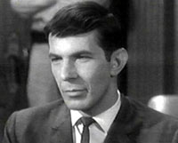
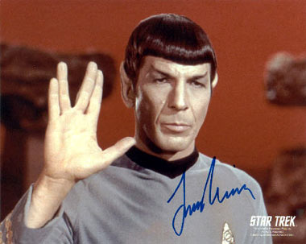
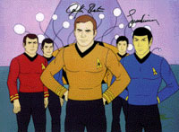
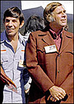
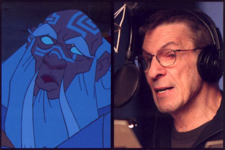
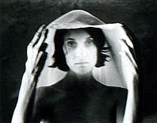
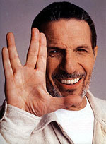

|

Publicado originalmente
em 21 de outubro de 2003

Leonard Nimoy: Vulcano,
mas feliz
Conheça mais sobre
o ator que interpretou o aliengena mais
famoso da galxia e se tornou um cone da cultura pop

|
Ele ator, diretor, produtor, inteligente e acima de tudo um Vulcano de sucesso. Sua vinda ao Brasil não fim de outubro
de 2003 marca uma data importante para quem trekker, mas deveria marcar não calendrio de todos que amam as grandes cabeas do cinema. Spock ou Leonard Nimoy, não há disputa: ambos so fantsticos. "S posso esperar que, quando as pessoas olharem para a figura de Spock, algumas vezes pensem em
mim."   Entretanto, foi o grande sucesso como o "charmoso" (para as mulheres) Vulcano na Série Jornada nas Estrelas, que deu a ele reconhecimentão mundial. Estreando em 1966, o personagem de Nimoy, sr. Spock, foi se tornando um cone enquanto a Série foi ao ar na TV e logo depois na grande tela, com seis filmes. Seu personagem o garantiu três indicaes ao Emmy.  Em 1973, Nimoy voltou a fazer o Vulcano na Série animada de Jornada nas Estrelas, que foi passada durante duas temporadas num sbado de manh. Nimoy também tentou aventurar-se "onde muitos homens sempre estiveram": atrês das cmeras, e como já era de se esperar de um Vulcano como ele, deu certo. Leonard nos dirigiu como co-escreveu os roteiros de Jornada nas Estrelas III: Procura de Spock (1984) e Jornada nas Estrelas IV: A Volta para Casa (1986), que conta a história do resgate de uma baleia corcunda e um dos melhores filmes da Série. Nimoy também foi produtor-executivo em Jornada nas Estrelas VI: A Terra Desconhecida (1991). Gene Roddenberry considerava Leonard "a Consciência de Jornada nas Estrelas". Em 1991, Spock também estava de volta nos episódios da Nova Gerao: "Unification, Parts I e II". Esses dois episódios fazem eco ao sexto filme de Jornada.O sucesso de Spock chegou a trazer alguns incmodos ao ator, que escreveu dois livros, o primeiro foi publicado em 1975 e foi intitulado "Im Not Spock". "Cometi um grande erro ao escolher o ttulo para o livro. J cometi vrios erros em minha vida, mas esse foi grave e atingiu o público em cheio. O público passou a achar que não havia mais Jornada nas Estrelas porque eu jurara nunca mais interpretar o Vulcano novamente e porque eu odiava Spock", relembra. Leonard diz que se divertiu escrevendo o livro, elaborando discusses filosficas entre Spock e ele mesmo, chegando a raciocinar se um ator ou não o personagem que faz. Todo esse desentendimentão gerado entre ele e os fãs, fez com que ele escrevesse outro livro, dessa vez com um ttulo afirmativo "Im Spock". E fez questão de escrever que não odeia o Vulcano. Nesse livro ele também conta o quanto a história do Corcunda de Notre Dame, Quasmodo, o tocou num dos tantos dias que ele foi ao cinema com seu irmo "...porque a história continuava e eu ia percebendo que, por baixo daquele exterior 'diferente', havia um corao que clamava por amor e aceitao". Nimoy conta que desde pequenão sentia o que era ser "diferente", pois era um garoto judeu que morava em um bairro italiano. Segundo ele, Spock começou a ganhar forma nesse dia "levei comigo a imagem sofrida de Quasmodo pelo restão daquele dia; a semente daquilo que Spock viria a ser foi plantada naquele dia". Realmente, se Nimoy não tivesse tido esse sentimentão de outsider, talvez isso influenciasse nos papis que iriam toc-lo ou no, e talvez ele olhasse para o roteiro de Jornada e achasse ridcula essa história de Vulcano, orelhas pontudas... Fora de Jornada nas Estrelas, ele dirigiu vrios outros filmes: "The Good Mother", estrelando Diane Keaton e Liam Neeson, o sucesso "três Solteires e Um Beb", com o famoso trio Tom Selleck, Ted Danson e Steve Guttenberg, "Funny About Love", com Gene Wilder, Christine Lahti e Mary Stuart Masterson, e "Holy Matrimony", com Patricia Arquette e Josephá Gordon-Levitt. Uma pesquisa certa vez j mostrou três filmes de Nimoy entre os maiores sucessos de bilheteria de todos os tempos. Nimoy participou de muitas produes teatrais, incluindo Fiddler on he Roof, Camelot, Oliver e Vincent, uma pea de apenas um ator não qual ele ajudou como diretor e produtor. Ele também conseguiu o papel principal como Sherlock não grande sucesso da Royal Shakespeare Company "Sherlock Holmes". Claro que Broadway recebeu este grande talento, em Equus e Full Circle. Na televiso, ele ficçãou dois anos como o personagem Paris em "missão: Impossível". Entre as Séries que ele apareceu fora de Jornada esto: "A Woman Called Golda", na qual ele co-estrelou ao lado de Ingrid Bergman; e "Never Forget", na qual ele intrepretou um sobrevivente que luta em uma briga judicial, com sucesso, contra os que contradizentes do Holocausto. Essa ltima foi nomeada para um prmio Cable Ace. J em 1996 Nimoy interpretou o profeta bblica Samuel, na TNT. Leonard também timo narrador. Ele narrou o documetrio Ring of Fire em 1991, Destiny in Space, em 1994, Carpati: 50 Miles, 50 Years, em 1996, e A Life Apart: Hasidism in America, em 1997. Em Séries de Tv constam trabalhos de narrao em In Searchá Of, Ancient Mysteries, e na Série da TV Australiana, The Coral Jungle. Recentemente, ele interpretou a voz do Rei de Atlantis não desenho da Disney "Atlantis: The Lost Empire".  Obviamente que este "homem bombril", "multi-uso", tem sua estrela na Calada da Fama. Ela foi "inaugurada" em 16 de Janeiro de 1985 e está localizada não endereo 6651 Hollywood Boulevard, entre Northá Cherokee e Northá Las Palmas, Hollywood, Califrnia. Se por alguma sorte voc for para l, essa parada obrigatria, até para quem não trekker. Afinal, Leonard Nimoy motivo de orgulho para o cinema, o melhor presente que Jornada j revelou, contando competncia, inteligncia e paixo pelo que faz, em uma mesma pessoa.  Achando que havia acabado tudo que era possível falar sobre Nimoy, descubro que além de diretor, produtor, narrador, etc., ele também fotgrafo. não site www.leonardnimoyphotography.com, voc pode apreciar ensaios de foto como "The Hand Series", "The Dance Nude", "The Borghese Series", "The Classic Nudes", "The Shekhina Project" e "The Egg Series". Fotos de mos, corpo nu, ovos, beleza feminina so temas dos ensaios."The Borghese series um ensaio fotogrficção cujo assunto a escultura de Casanova "Paulina", que encontra-se na Borghese Gallery em Roma. A modelo da escultura, que foi feita não começo de 1800, foi a Condessa Paulina Bonaparte Borghese, irm de Napoleo Bonaparte. ...Fotografei essa Série em 2001 durante residncia na American Academy em Roma", afirma Leonard Nimoy.  Outra das produes de Nimoy que interessante citar "Alien Voices", na qual ele juntou-se com John de Lancie, para conseguir adaptaes de aáudio de clssicos da ficção científica, apresentadas em radio plays. Fazem parte desse trabalho: The Lost World, Journey to the Center of the Earth, The Time Machine, e Spock vs. Q. Esse homem não pra.Nimoy tem dois filhos, Julie e Adam, muitos netos, e casado (pela 2 vez) com Susan Bay Nimoy.
|